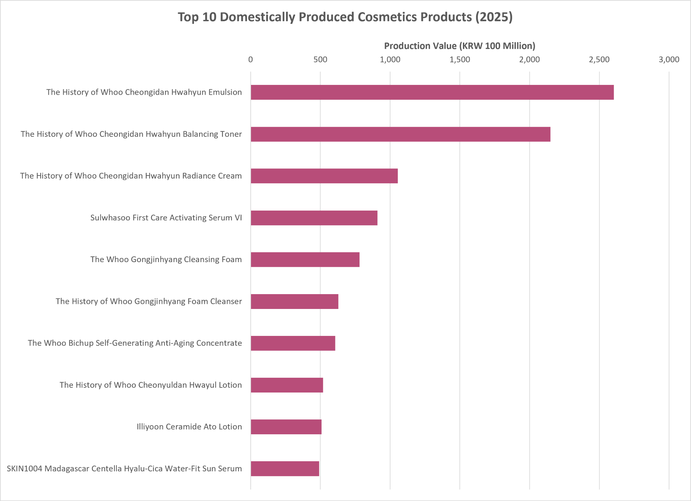

Market opportunity is more than a growth percentage.
Using South Korea’s MFDS cosmetics industry statistics, I compared export growth with absolute market scale to inform international expansion priorities. The U.S. added approximately $285 million in export value year over year, while Poland more than doubled from a smaller base. China declined by approximately $474 million.
Commercial implication: Evaluate the U.S. as the established-scale priority and Poland as a promising pilot market—not as an automatic investment decision.
Three views of the opportunity


Reading growth alongside scale avoids overprioritizing small markets with unusually high percentage increases. Product rankings suggest questions for follow-up category research rather than proving overseas product-market fit.
How I approached the analysis
01 / Define
Investigated where a fictional multi-brand Korean cosmetics exporter should focus additional commercial due diligence.
02 / Prepare
Used MFDS industry statistics, an English translation, and an AI-generated workbook as inputs requiring verification.
03 / Validate
Checked data types, duplicates, missing values, reporting units and selected YoY calculations in Google Sheets; created three Excel visualizations with AI guidance.
Missing data were not treated as zero. USD export values and KRW production values were kept distinct. Read the full six-stage methodology and analytical limitations.
Recommendations for further evaluation
- Prioritize U.S. commercial analysis. Investigate channel opportunities, category demand, unit economics and competitive conditions in the largest of the highlighted growth markets.
- Test Poland through a phased pilot. Validate distributors, customer demand, operational costs and repeatable growth before committing major resources.
- Build the investment case. Model margins, market-entry costs and scenarios; review exposure to declining destinations such as China before reallocating resources.
Want to see the reasoning?
The full companion page retains the six stages—ASK, PREPARE, PROCESS, ANALYZE, SHARE and ACT—including supporting interpretations, validation choices, business hypotheses and limitations.
Portfolio case study based on MFDS industry statistics. Business scenario is fictional; narrative preparation was AI-assisted, with independently developed business reasoning and guided spreadsheet visualization work.